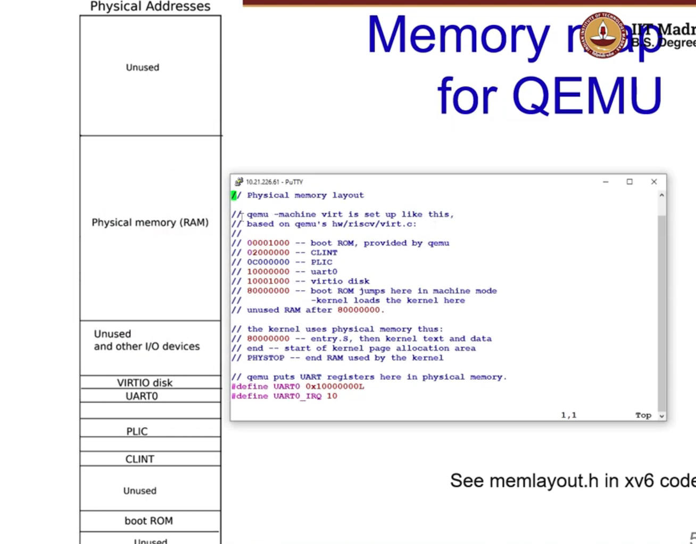
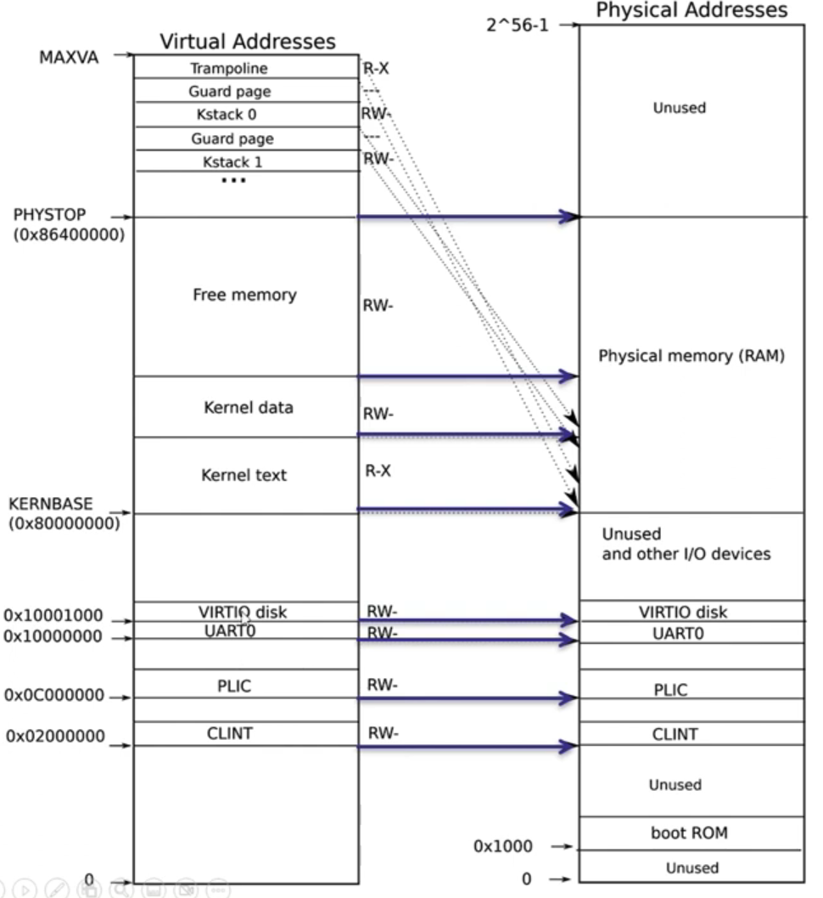
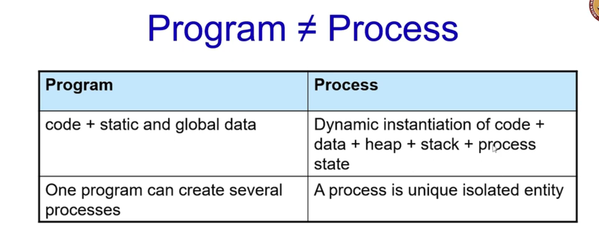
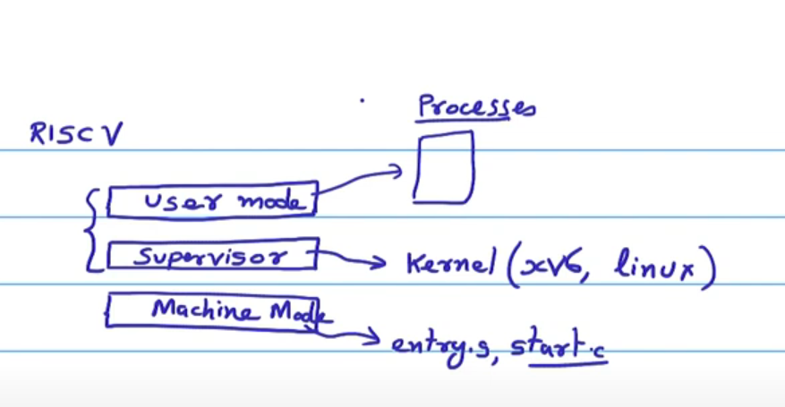
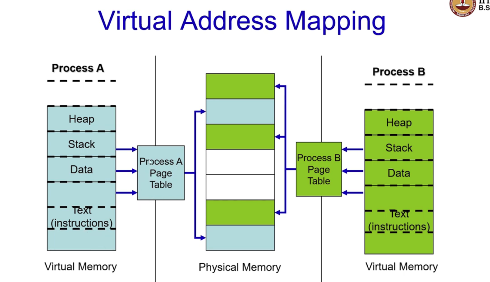
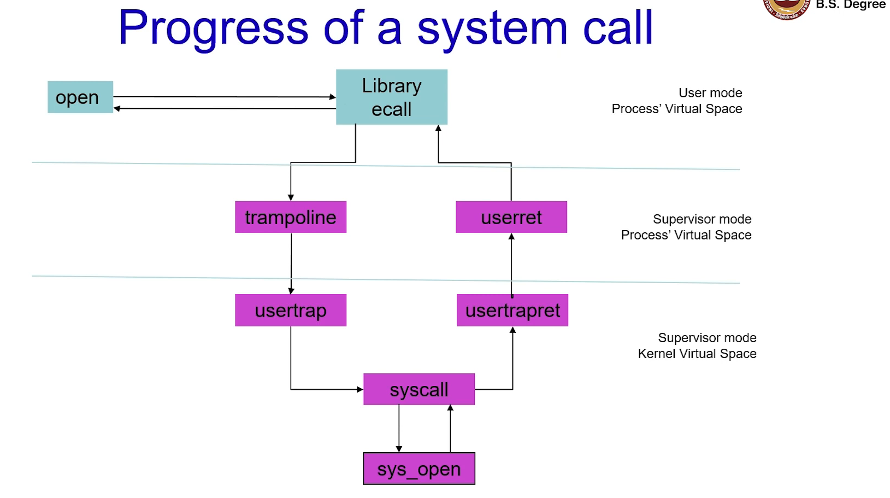

Every time the CPU wants to load/store data/instruction, it puts out a virtual address. The MMU uses a sequence of page tables to convert the virtual address to the corresponding physical address. This physical address is looked up in the DRAM.
Any load/store instruction would go through this translation unless there is a caching of the translation present in the CPU called TLB.
The setting up of the page tables is handled by the OS. Unless OS sets it up and enables the translation, the scheme won’t work.
During booting, page tables are not present in the ram. Soon after booting virtual memory is not enabled as the OS needs to set it up and enable it. During this period before page tables are set up Physical Address = Virtual Address.
Boot ⇒ entry.S ⇒ start.C ⇒ main.C . The execution of entry and start is done without MMU and DRAM is directly accessed. In main before turning on MMU, the kernel sets up the hierarchy of page tables by setting up the kernel virtual address space and turning on the MMU.
Kernel Virtual Address Space: The OS needs to know about the memory of the system and thus could differ across systems. The memory map for QEMU is:
The kernel expects there to be RAM for use by the kernel and user pages from physical address 0x80000000 to PHYSTOP (Maximum location of the ram).
Before we enable MMU we would need to create the virtual address space that maps to the physical address space. 
Some addresses are mapped 1-to-1. Others are mapped differently. For example KERNBASE 0x80000000 will be the same for virtual address and physical address.
The trampoline, Guard page are somewhere in the higher virtual address space and but mapped to a lower physical address space.
Note that some items may have different virtual addresses but refer to the same physical address. Somethings in the Trampoline may have the same address as the kernel text item. Thus the same data can be accessed from 2 virtual addresses.
§3.2: Memory Initialisation in xv6
Create page hierarchy and tell the CPU which virtual address should map to which physical address. kvminit() creates the kernel page table does this initialisation.
mappages(kernel pagetable, virtual address, page size, physical address, protection bits) ⇒ only the required mappings are created.
etext is the address where the kernel ends. Kernel code is give read and execute permissions, no write permissions
Power on Reset ⇒ Registers Initialized to 0 ⇒ entry.S ⇒ start.C ⇒ main.C
Upon arrival in main, paging is disabled and we enter in supervisor mode. kinit (Page frame creation), kvminit(create kernel page table), kvminithart(turns on paging and initializes satp)
Processor is enabled with paging when w_satp function inside kvminithart completes execution.
§3.3: Processes
Every time an OS wants to run an application it creates a process. A process is a program in execution and is the most important abstraction in OS identified by a virtual address space. It comprises of the ELF (code, data), user space (stack, heap), kernel space (state in the OS, kernel stack). 
Process Address Space has a virtual address map with all memory a process can address and a large contiguous array of addresses from 0 to MAXVA. 
The heap, stack, data, instructions can’t access the trampoline and trapframe as they are in supervisor mode of the process. Each process has a different address space. However the data contained in trapframe and trampoline are common across all processes. 
User Space Stack is used when executing user code and is present in the process address space.
Kernel Space stack is used when executing kernel code (eg system calls) ⇒ Kernel can execute even if user stack is corrupt.
In addition to the kernel stack, the kernel also has unique entry called proc data structure. It allows processes to resume execution after a while, keeps track of resources used and tracks the process state
§3.4: Process control block in xv6
int pid can uniquely identify a process. Number is incremented sequentially. When max is reached reset and continue to increment until an unallocated pid is found
enum proctstate state defines the process state : Unused, sleeping, runnable, running, zombie.
Runnable: Ready to execute on the CPU which is executing another process. Scheduler picks process from the ready queue
Sleeping: Waiting for an external event to occur (scanf for example). Upon event obtained ⇒ back to runnable state
Timer interrupt would cause a running process to go to the runnable state i.e. put in the queue again
Every time we have a process running and it is going to be replaced by another process, which was in the runnable queue and the scheduler runs it we need something known as a context switch ⇒ i) state of the currently running process should be saved ii) state of the runnable process chosen for execution should be restored.
State contains registers, list of open files, related processes, etc
pagetable_t pagetable is a pointer to page directory pointer (L2). With this a mapping can be established.
trapframe contains various registers used in xv6 and is stored at the top of the virtual address space
There are 64 proc entries and each process would have its own process id, state, page table, kernel stack, size, etc
§3.5: Executing Process, Registers and function invocation in xv6
Suppose there are 2 functions f1() and f2() and f2 is called inside f1. In that case the register “ra” will store the instruction which is to be executed inside f1 as soon as f2 is finished.
The stack pointer points to the bottom of the the stack corresponding to the currently active program. So when f1 calls f2, the stack pointer will point to the bottom of f2.
t register - caller saved , s register - callee saved register (responsibility of f1 to save registers and restore)
§3.6: Trapframe and System calls
Proc also contains a pointer to the trapframe for the particular process. The trapframe contains all the registers that are used in the RISC V core.
If a process is currently being used and is then interrupted by the scheduler, the execution of the process has to be paused. Since at a later time this has to be started from this point again, the important registers and parameters of the process required to restart the process are saved in these registers inside the trapframe.
The restoration of the trapframe allows the process to continue from where it stopped.
Suppose a user process is executing and the service of the OS is required (eg read a file), in order to do this the process needs to request the kernel. The way a process does this is by invoking a System Call which switches the CPU from the user mode to supervisor mode and permits the OS to execute.
System Calls is implemented using “ecall”. To distinguish between various system calls (open file, write to a file, read keyboard, etc), a system call number is passed just before ecall. The register “a7” is set to a specific value. 
Once open is invoked, ecall is executed. At this point, the CPU switches to to supervisor mode from the process’ virtual space and reads the “a7” register from the proc trapframe. Then usertrap switches to kernel virtual space and calls the appropriate syscall.
Going back, whatever is written by the syscall is stored in the “a0” register of the trapframe. When we return at “userret”, the trapframe is used to restore the user process execution.
{kind=link}
{kind=link}
{kind=link}
{kind=link}
{kind=link}
{kind=link}
{kind=link}
{kind=link}